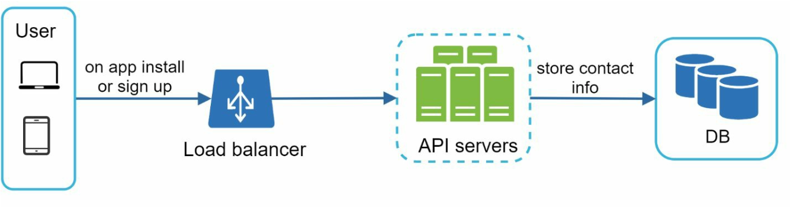
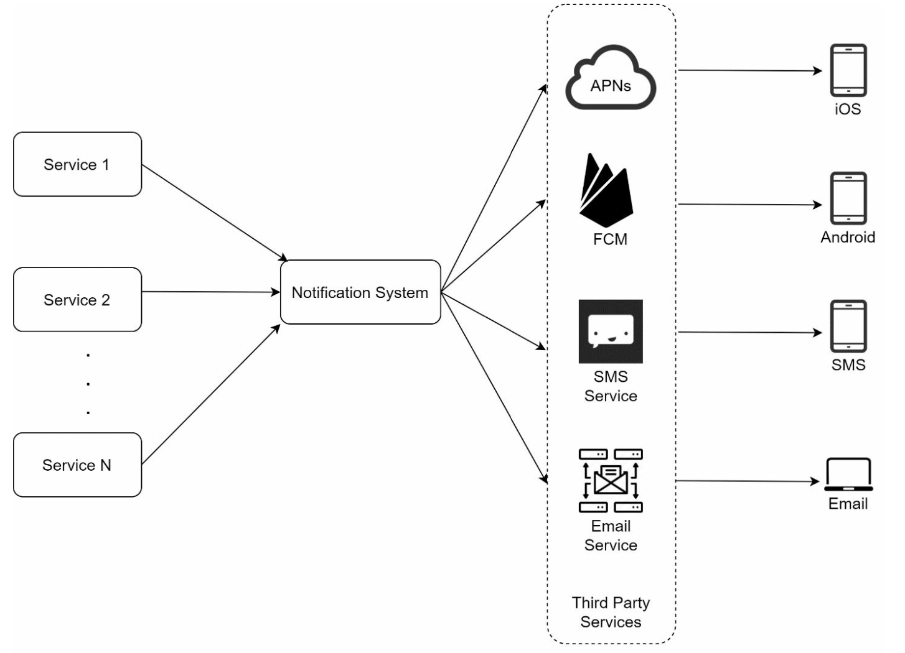
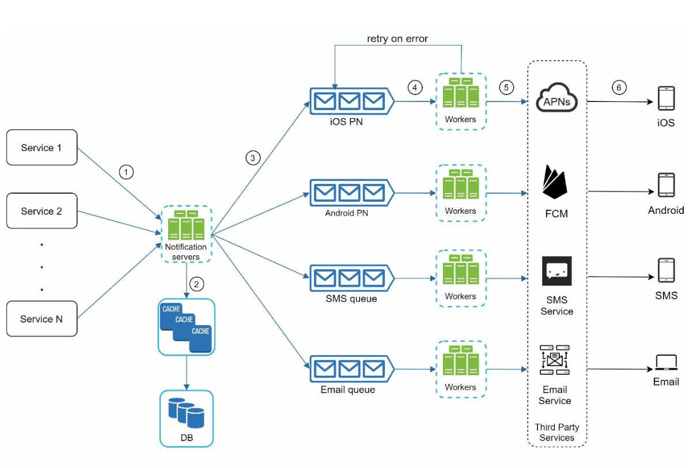
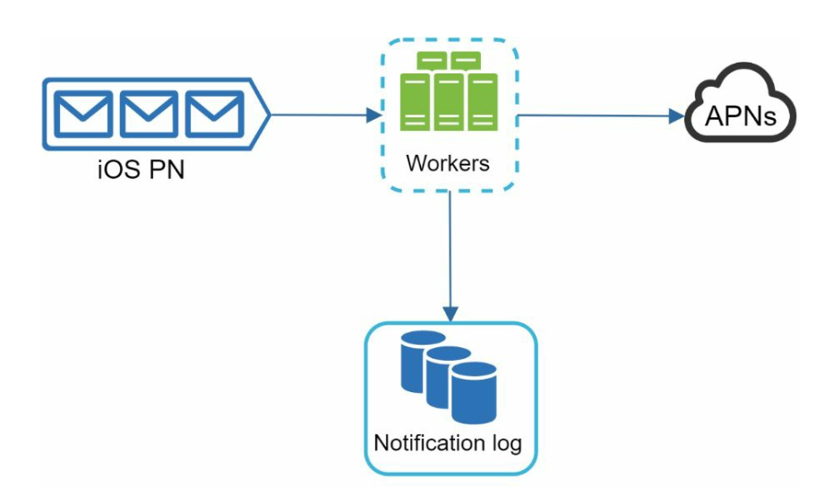
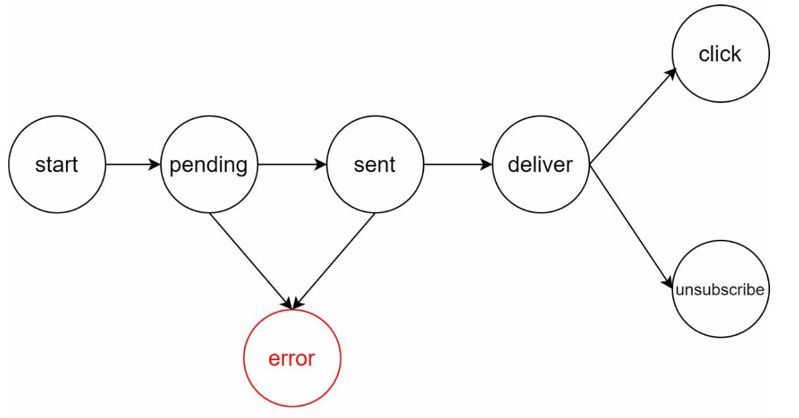
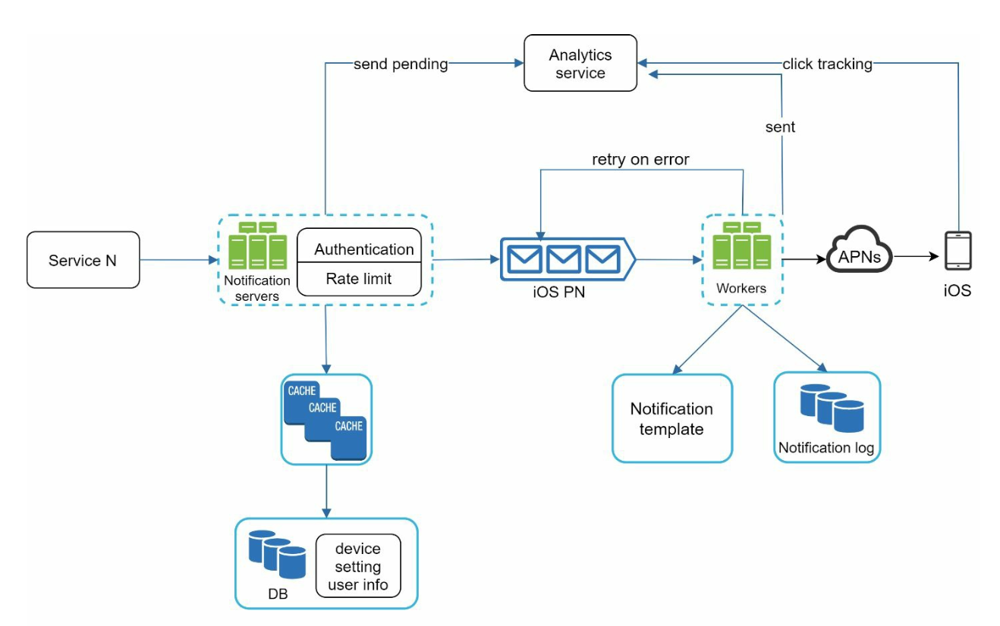

Design a Notification System
Push, SMS aur Email — teen channels, 16 million notifications/day. Dekhte hain ek reliable, decoupled notification system kaise banta hai: queues, workers, retries, dedup aur opt-out ke saath.
Introduction: Notification system kyun important hai
Har modern app ko users ko kuch na kuch batana padta hai — "aapka order ship ho gaya", "OTP 4321 hai", "billing reminder", "flash sale shuru". Ye sab notification system ka kaam hai. Teen main channels hain:
- Push notification — mobile (iOS/Android) ya desktop pe.
- SMS — phone number pe text.
- Email — inbox mein.
Interesting baat ye hai ki actual "delivery" hum khud nahi karte — Apple, Google, Twilio, SendGrid jaise third parties karte hain. Hamara kaam hai unke saamne ek reliable, scalable, decoupled pipeline banana jo millions of events ko bina loss ke, bina duplicate ke, sahi user tak sahi channel pe bheje.
Step 1: Problem samjho aur scope fix karo
Interview mein seedha diagram mat banao — pehle clarifying questions poochho. Notes ke hisaab se requirements ye hain:
| Question | Answer (scope) |
|---|---|
| Kaun se notification types? | Push, SMS, Email |
| Real-time chahiye? | Soft real-time — jaldi pahunche, but high load pe thoda delay acceptable |
| Platforms? | iOS, Android, Desktop |
| Trigger kaun karega? | Client apps bhi, aur server-side scheduled jobs bhi |
| Opt-out? | Haan — user specific channel disable kar sakta hai |
| Scale? | Push 10M/day, SMS 1M/day, Email 5M/day |
Back-of-the-envelope: ye numbers kitne bade hain?
1 din ≈ 86,400 sec ≈ ~105 sec. To:
- Push: 10M / 105 ≈ ~100–115 per sec average
- SMS: 1M / 105 ≈ ~10–12 per sec
- Email: 5M / 105 ≈ ~50–60 per sec
Average chhota lagta hai, lekin notifications bursty hoti hain — ek marketing campaign ya "sale live" event ek saath lakhon users ko target karta hai. Isliye design ka asli challenge average QPS nahi, balki spikes ko absorb karna aur third-party rate limits ke andar rehna hai. Yahi wajah hai ki aage queue aayegi.
Step 2: High-level design
Different notification types kaise kaam karte hain
| Channel | Provider | Hamein kya chahiye |
|---|---|---|
| iOS push | APNs (Apple Push Notification service) | Device token + payload (JSON) |
| Android push | FCM (Firebase Cloud Messaging) | Device/registration token + payload |
| SMS | Twilio, Nexmo (Vonage) jaise providers | Phone number + text |
| SendGrid, Mailchimp jaise commercial services | Email address + subject/body (HTML) |
Apna SMTP server chalana possible hai, lekin deliverability (spam folder se bachna, IP reputation) bahut mushkil kaam hai — isliye commercial email service use karte hain.
Contact info gathering
Notification bhejne ke liye pehle address chahiye: device token, phone number, email. Ye sab app install ya signup ke time collect hota hai.

- User table: user_id, email, phone_number, country_code…
- Device table: id, user_id, device_token, platform, last_logged_in_at. Ek user ke multiple devices ho sakte hain (phone + tablet) — isliye alag table, 1-to-many relation.
Notification sending flow (pehla version)

- Service 1…N: microservice, cron job ya distributed system — jo bhi "notification bhejo" event generate kare.
- Notification System: APIs deta hai, basic validation karta hai (email/phone format), DB/cache se data laake message render karta hai, aur third party ko bhejta hai.
- Third-party services: asli delivery. Extensibility important hai — kal ko kisi market mein FCM available na ho (jaise China), to alag provider plug karna pade.
Is design ki problems
- Single Point of Failure: ek hi notification server — wo down, sab down.
- Scale karna mushkil: DB, cache, processing sab ek jagah — independently scale nahi ho sakte.
- Performance bottleneck: HTML email render karna, third-party ka slow response wait karna — ye sab synchronous hai, to ek slow provider poore system ko slow kar deta hai.
Improved design

Teen bade changes:
- DB aur cache ko notification server se bahar nikalo — ab ye shared, independently scalable components hain.
- Multiple notification servers + horizontal scaling — servers stateless rakho, load balancer ke peeche jitne chahiye utne.
- Message queues se decouple karo — har channel ki apni queue. Queue ek buffer ka kaam karti hai: burst aaya to queue lambi ho jaayegi, system crash nahi hoga.
Per-channel queue kyun? Isolation ke liye. Agar SMS provider down hai, to SMS queue bharti rahegi lekin iOS/Email bilkul normal chalenge. Ek shared queue mein ek slow channel sabko block kar deta (head-of-line blocking).
notif.push.ios, notif.sms…), Spring Boot @KafkaListener consumers as workers, aur consumer group scale karke throughput badhao. Kafka mein ek topic ke partitions ki sankhya hi consumer parallelism ki upper limit hoti hai — isliye partition count soch-samajh ke rakho.Step 3: Design deep dive
Reliability: data loss kaise rokein

Notifications delay ho sakti hain ya reorder ho sakti hain — chalega. Lekin lost nahi honi chahiye. Isliye:
- Notification data ko notification log DB mein persist karo (status: pending / sent / failed).
- Retry mechanism: third-party fail kare to exponential backoff ke saath retry. Bar-bar fail ho to alert + dead-letter queue (DLQ).
- Queue consumer ko message tabhi ack/commit karna chahiye jab send successful ho ya log mein safely record ho jaaye — warna worker crash = message gaya.
Kya notification exactly once milegi?
Short answer: nahi. Distributed system mein "at-least-once" practical hai, exactly-once delivery third-party tak guarantee nahi kar sakte. Isliye duplicates ko kam karne ke liye dedup:
- Har event ka ek unique event_id ho (producer side pe generate).
- Event aaye to check karo: ye event_id pehle dekha hai? Haan → discard. Nahi → bhejo aur event_id record karo.
- Practical implementation: Redis mein
SET event_id 1 NX EX 86400(TTL ke saath) — atomic "pehli baar hai kya?" check.
Additional components
- Notification template: Bahut si notifications ka format same hota hai — "Hi {name}, aapka order {order_id} ship ho gaya". Template se format consistent rehta hai, error kam, aur har baar scratch se banana nahi padta.
- Notification settings: Users ko fine-grained control chahiye. Table:
user_id, channel, opt_in (boolean). Bhejne se pehle ye check zaroor hona chahiye. - Rate limiting: User ko spam mat karo — bahut zyada notifications = user poori app ki notifications band kar dega. Per-user per-channel cap lagao.
- Retry mechanism: Third-party fail → event wapas retry queue mein; lagataar fail → developers ko alert.
- Security: Push APIs ke liye appKey / appSecret — sirf authenticated/verified clients hi notification bhej sakein.
- Monitor queued notifications: Queue mein pending events ki ginti sabse important metric hai. Number badhta ja raha hai = workers kam hain → auto-scale.
Events tracking

Business ke liye ye metrics (open rate, click rate, engagement) bahut kaam ke hain — isliye notification system ko analytics service ke saath integrate karte hain.
Updated design (sab components milake)

- Trigger service notification server ki API call karta hai.
- Server authenticate + rate-limit karta hai, cache/DB se metadata laata hai (settings check yahin).
- Event uski channel queue mein jaata hai.
- Worker event uthata hai, template render karta hai, log likhta hai.
- Third-party service user tak deliver karti hai; fail hua to retry.
Trade-offs aur failure modes (thoda deeper)
| Decision | Kyun | Cost / risk |
|---|---|---|
| Async via queue | Burst absorb, provider failure isolate | Latency thodi badhti hai; queue khud ek infra component jise operate karna hai |
| At-least-once + dedup | Data loss se bachao | Rare duplicates possible |
| Per-channel queue | Isolation, independent scaling | Zyada topics/queues manage karne padte hain |
| Third-party delivery | Deliverability, compliance unka sar-dard | Vendor rate limits + cost (SMS mehenga hota hai); fallback provider rakhna padta hai |
- Priority: OTP aur marketing email ek hi queue mein mat daalo — OTP ko alag high-priority queue chahiye warna campaign ke peeche OTP 10 minute late.
- Provider outage: circuit breaker lagao; continuous failure pe retry storm mat karo, backoff + secondary provider.
- Timezones / quiet hours: scheduled notifications user ke local time ke hisaab se.
Interview mein kaise bolein
- (5 min) Scope: channels, soft real-time, scale (10M/1M/5M per day), opt-out. Quick QPS math aur "bursty traffic" point.
- (10 min) Simple design (services → notification system → APNs/FCM/SMS/Email), phir khud uski kamiyan batao: SPOF, coupling, sync bottleneck.
- (10 min) Improved design: stateless servers, shared cache/DB, per-channel queues + workers.
- (15 min) Deep dive: notification log + retry, at-least-once + dedup via event_id, settings/opt-out check, rate limiting, templates, monitoring queue depth, analytics events.
- (5 min) Wrap-up: priority queues, provider failover, DLQ, metrics.
DefaultErrorHandler with backoff aur dead-letter topic ek standard combo hai. Redis SET NX EX dedup ke liye widely use hota hai.Common follow-up questions
Q: Worker crash ho jaye beech mein to?
A: Queue offset/ack commit nahi hua hoga, to message dobara deliver hoga (at-least-once). Notification log + dedup se duplicate kam karte hain.
Q: OTP jaisi urgent notification marketing burst mein fas na jaaye?
A: Priority-based alag queues aur dedicated workers. High-priority queue ka SLA alag monitor karo.
Q: User ne opt-out kiya hai, check kahan hota hai?
A: Notification server pe enqueue se pehle (settings cache se), taaki wasted queue/worker work na ho.
Q: Third-party (jaise SMS provider) down hai?
A: Retry with exponential backoff, circuit breaker, DLQ, aur ideally secondary provider pe failover. Queue buffer ki wajah se baaki channels unaffected.
Q: Workers kitne chahiye, kaise decide karoge?
A: Queue depth/lag metric pe autoscale — lag badh raha hai to workers badhao.
Q: Scheduled notifications (kal subah 9 baje) kaise?
A: Trigger side pe scheduler/cron job jo sahi time pe event produce kare; notification pipeline wahi rehti hai.
Key Takeaways
- Delivery third parties (APNs, FCM, Twilio, SendGrid) karte hain; hamara kaam reliable pipeline hai.
- Contact info signup/install pe collect hota hai; device table 1-to-many hai aur stale tokens clean karne padte hain.
- Single server design → SPOF + coupling; fix: stateless horizontally scaled servers + shared cache/DB + per-channel queues + workers.
- Queue = buffer + isolation. Queue depth sabse important scaling signal hai.
- Reliability: notification log + retry; delivery at-least-once hai, event_id dedup se duplicates kam karo.
- Templates, opt-out settings, rate limiting, appKey/appSecret auth aur analytics tracking — production-grade system ke must-haves.